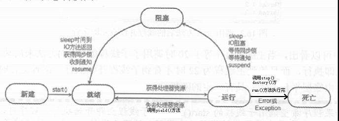

几个重要概念
1.线程
依附于进程执行的最小程序单元
2.进程
容纳线程的容器，可以独立运行
3.关系
一个进程是一个独立(self contained)的运行环境，它可以被看作一个程序或者一个应用。而线程是在进程中执行的一个任务。
Java运行环境是一个包含了不同的类和程序的单一进程。线程可以被称为轻量级进程。线程需要较少的资源来创建和驻留在进程中，并且可以共享进程中的资源。
4.并行
真正的同时执行
5.并发
多线程任务执行时，因为调度速度快，看起来同时执行。
6.多线程编程
在多线程程序中，多个线程被并发的执行以提高程序的效率，CPU不会因为某个线程需要等待资源而进入空闲状态。多个线程共享堆内存(heap memory)，
因此创建多个线程去执行一些任务会比创建多个进程更好。举个例子，Servlets比CGI更好，是因为Servlets支持多线程而CGI不支持。
7.线程优先级
每一个线程都是有优先级的，一般来说，高优先级的线程在运行时会具有优先权，但这依赖于线程调度的实现，这个实现是和操作系统相关的(OS dependent)。
我们可以定义线程的优先级，但是这并不能保证高优先级的线程会在低优先级的线程前执行。线程优先级是一个int变量(从1-10)，1代表最低优先级，10代表最高优先级。
8.线程的生命周期

9.多线程同步
a.synchronized 方法（锁住整个对象，this）与同步块(可以为任意对象加锁，更灵活) 同步方法锁住整个代码块，代码块较大时效率低，同步块只锁住需要同步的部分。
b.使用对象的wait和notify方法实现同步
Obj.wait()，与Obj.notify()必须要与synchronized(Obj)一起使用，也就是wait,与notify是针对已经获取了Obj锁进行操作，
从语法角度来说就是Obj.wait(),Obj.notify必须在synchronized(Obj){...}语句块内。
Thread.sleep()与Object.wait()二者都可以暂停当前线程，释放CPU控制权，主要的区别在于Object.wait()在释放CPU同时，释放了对象锁的控制。
多线程买票，要求同步：
public class Test {
private List tickets = new ArrayList<>();
static {//静态代码块，类加载执行一次，由于代码块
System.out.println("静态代码块");
}
{//代码块，优于构造函数执行，每次创建对象都会执行
System.out.println(11);
for(int i=1;i<=100;i++){
tickets.add(new Ticket("tno-"+i));
}
}
public Test(){//每次new 创建对象执行
System.out.println("构造方法");
}
public static void main(String[] args) {
try {
new Test().sellTicket();
System.out.println("卖票结束");
} catch (InterruptedException e) {
e.printStackTrace();
}
}
public void sellTicket() throws InterruptedException{
TicketOffice ticketOffice = new TicketOffice("售票处1", tickets);
TicketOffice ticketOffice2= new TicketOffice("售票处2", tickets);
TicketOffice ticketOffice3 = new TicketOffice("售票处3", tickets);
ticketOffice.start();
ticketOffice2.start();
ticketOffice3.start();
ticketOffice.join();//将子线程加入到主线程，那么主线程会在所有子线程执行结束后在执行，等同于计数器判断子线程是否执行完毕
ticketOffice2.join();
ticketOffice3.join();
}
}
public class Ticket {//票
private String no;
public Ticket(String no) {
super();
this.no = no;
}
public String getNo() {
return no;
}
public void setNo(String no) {
this.no = no;
}
}
public class TicketOffice extends Thread{//售票处类
private List tickets;
public TicketOffice(String name,List tickets) {
super.setName(name);
this.tickets =tickets;
}
@Override
public void run() {//同步
//卖一张票 票库移除
while (tickets.size() > 0) {
try {
sellTicket();
} catch (InterruptedException e) {
// TODO Auto-generated catch block
e.printStackTrace();
}
}
}
public void sellTicket() throws InterruptedException{
synchronized (tickets) {//卖票，锁住票池 因为每个售票处拿到的是同一个票池 所以可以做到不重复卖票 ，这里锁同一个对象才能同步。this,和 new object 无效 。TicketOffice.class 可以
if (tickets.size() > 0) {
Ticket ticket = tickets.get(0);
System.out.println(Thread.currentThread().getName()+"卖出一张票："+ticket.getNo());
tickets.remove(ticket);
}
Thread.sleep(100);
}
}
}